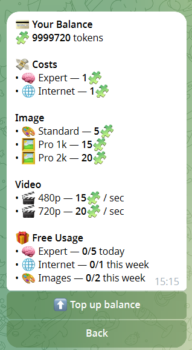

Цены Grok AI Telegram Bot
Пользуйтесь ботом бесплатно каждый день. При необходимости можно пополнить баланс и расширить возможности без обязательной месячной подписки.
Текущая модель
| План | Что включено | Кому подходит |
|---|---|---|
| Бесплатный доступ | 10 запросов в режиме Quick ежедневно после подписки на канал. | Для тестирования и нерегулярного использования. |
| Quick | 1 токен за запрос. | Для ежедневных коротких диалогов и простых задач. |
| Генерация изображений | 10 токенов за запрос. | Для создания изображений по текстовому описанию. |
| Пополнение через Stars | Токены приобретаются по мере необходимости через Telegram Stars. | Для гибкого использования без ежемесячной подписки. |
Пакеты пополнения
Текущие пакеты из платежной панели бота:
100 токенов -> 25 Stars500 токенов -> 125 Stars1000 токенов -> 200 Stars (-20%)5000 токенов -> 900 Stars (-28%)

Скриншот актуальных пакетов пополнения в боте.
Когда модель оплаты по факту использования выгоднее
- Если вы задаёте немного, но важных вопросов, а не пользуетесь ботом ежедневно.
- Если ваша активность носит периодический характер (спринты, экзамены, запуски проектов).
- Если вам важно контролировать расходы за каждый запрос вместо фиксированной ежемесячной оплаты.
- Для большинства пользователей такая модель оказывается экономичнее, чем ежемесячная подписка.